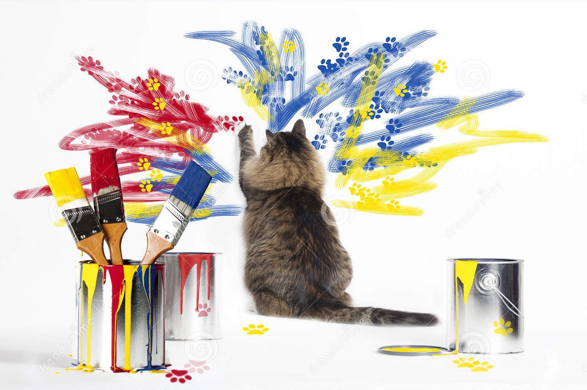
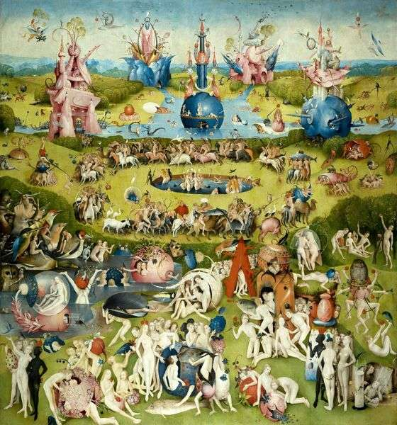

We are already halfway through the course! Pat yourself on the back for the excellent work done!
So far, we have covered several techniques for understanding networks, and we will cover more in the following weeks. Still, sometimes the best analysis is not very much appreciated by your audience if it is difficult to understand.
Imagine that your boss asked you for an overview of network data of interest, and you show up with a pdf file filled with tables and diagrams. It’s not gonna fly if your boss has 5 minutes for you, right?
With this tutorial, we will learn how to represent networks in pretty and informative ways so that your analyses will have a greater impact on the intended audience. If you do the job well, the 5 minutes your boss has for you will be more than enough to support your point!
Let’s get started with the art of depicting networks!

As in formula 1, we first quickly make sure you have all the equipment ready for the run!
You need to have installed R version 4.1.1 and this tutorial is going to check it for you. Please hit the Run Code button.
check_R()You need to have installed RStudio version 1.4.1717 (or above) or 2021.9.0.351 (or above). Let’s check by clicking Run Code:
check_RStudio()You need to have a few packages installed. Click the Run Code to check. It will check whether you have the required packages installed and will attempt to install any missing packages in case there are any (or it will advise you to upgrade SNA4DS).
check_pkgs()And now, take your brushes and colors and get ready to paint!
The visualization of networks is a specific field of data visualization. In general, we visualize data for several reasons, but one of the most important is to make data and results clear and understandable for a larger public. Communicability is an essential skill for academia but also for the private and the public sector.
You might have very important findings, but if your audience does not understand them; they are worth nothing. A great visualization makes more than half of the job! Great visualizations are storytellers!
Several software allow you to do pretty and less pretty network visualizations. Some examples are Gephy, UCInet, Pajek …
Of course, we are coders, so we want to be able to do everything by ourselves. Several libraries do the job both in Python and R. Each of them has pros and cons.
As you might imagine, we move on with :)
Plotting networks is essentially plotting dots and lines. The environment allows us to do it in a relatively easy way.
x <- 1:10
y1 <- x*x
y2 <- 2*y1
plot(x, y1, type = "b", pch = 19,
col = "red", xlab = "x", ylab = "y")However, it isn’t easy to represent networks in the R base programming language only.
R base does not recognize a network unless you tell it that it is one and does not provide a ready-made environment to plot them.
The recognizes the class igraph. So the package offers a good balance between easy coding and pretty visualizations. Hence in this tutorial, we are going to learn how to use this one.
Remember, there are also other options out there.
igraphThe first ingredient that you absolutely need to plot a network in igraph is an igraph object!
Hence, either you import your data from a data frame/matrix/edge list, etc., into igraph, or make use of an existing igraph object, or use the package intergraph to change the class of your network to igraph.
When you get to your object of class igraph, what do you do?
Well, surprise, surprise, you plot it with the plot() function!
Wanna try? Let’s create an Erdos Renyi graph and plot it.
NOTE: we set a seed since this is a random network generator, and we want to have the same output every time :)
set.seed(10000)
igraphNet <- igraph::erdos.renyi.game(10, 2/10)
plot(igraphNet)And it worked! It would be really nice if this simple solution worked all the time.
Unfortunately, it is not the case.
To plot more complex networks, we need to make our visualization skills more sophisticated
Let’s make a second attempt! We create a second igraph network, but this time, larger.
set.seed(10001)
igraphNetLarge <- igraph::erdos.renyi.game(1000, 1/1000)
plot(igraphNetLarge)Ouch! I’m blind! What’s this blurb! It’s just a mess! This last plot does not meet any of the goal we stated above.
Yes, unless we are working with a toy network, we are not going to tell a story just using the plot() function with an object of class igraph.
So, when I said your story, I meant your story properly! The data that we are going to visualize is YOUR data—the data collected with the survey that we did together in week 4.
Well, something close to your story, to be honest, since I anonymized it and changed it a bit so that no one can recognize themselves!
Still, this is your story!
Let’s briefly explore the network.summary(net)We have
network level: with 81 nodes and 150 edges -directed network (since respondents named alters filling out the survey)
node level: 4 nodes attributes
edge level: 2 edge attributes
Let’s make sure it is anonymous.
igraph::V(net)$nameWe have 81 of you in there. From student 1 to 81. Who knows who you are? (Ahah… me! Evil laugh!)
Ok, let’s get serious! Let’s plot an overview of the network-level information.
plot(net) We can do better than this, simply improving the graphics a little.
Simply plot it, reducing the vertexes and the size of the arrow, removing the vertex label, and curving the edges a little, to make them more artistic.
plot(net,
vertex.size = 5,
edge.arrow.size = .4,
vertex.label = NA,
edge.curved = .1)Better right? Just playing around with these options, we achieved a much clearer output. Now we actually see the groups and the relationships clearly.
Still, we can do better! So let’s do it, together with some aesthetic improvements!
plot(net,
vertex.size = 7,
edge.arrow.size = .2,
vertex.label = igraph::V(net)$name,
edge.curved = .1,
vertex.label.cex = 0.6, # vertex label size
vertex.label.color = "black",
edge.color = "blue",
vertex.color = "orange",
vertex.frame.color = "green") # node perimeterHow do you like this one? Can you figure out which line of code does what?
It indeed looks fancier, but it is still not telling us a lot about what happens in your group!
Let’s make use of the attributes!
We have more information on this network. Let’s try to show it.
One easy way is to plot a node attribute as the color of the node or as the label of the nodes.
For instance, we can plot:
NOTE: these are both categorical variables.
plot(net,
edge.arrow.size = .2,
edge.color = "gray80",
vertex.frame.color = "#ffffff",#node perimeter
vertex.label = igraph::V(net)$gender,
vertex.label.cex = 0.6, # vertex label size
vertex.label.color = "black",
vertex.color = igraph::V(net)$year
) With this visualization, we can already see whether the year and the gender matter in forming friendship!
What do you think?
We can also show a third node attribute at the same time: “How much students like data science.”
According to how much each of the respondents likes data science, the size of the node changes.
plot(net,
edge.arrow.size = .2,
edge.color = "gray80",
vertex.frame.color = "#ffffff",#node perimeter
vertex.label = igraph::V(net)$gender,
vertex.label.cex = 0.6, # vertex label size
vertex.label.color = "black",
vertex.color = igraph::V(net)$year,
vertex.size = igraph::V(net)$DS*2
) Pay attention: since the simple numeric variable expressing Data Science likelihood would plot nodes of tiny size, I added *2 to multiply the coefficient by two and increase the size. It’s a helpful trick.
Can you plot the same network with Hang-Out as node size instead of Data Science? Can you also increase the size by 3 for me?
plot(net,
edge.arrow.size = .2,
edge.color = "gray80",
vertex.frame.color = "#ffffff",#node perimeter
vertex.label = igraph::V(net)$gender,
vertex.label.cex = 0.6, # vertex label size
vertex.label.color = "black",
vertex.color = igraph::V(net)$year,
vertex.size = igraph::V(net)$Hang.Out*3
) Another common and helpful way to show a node attribute on a plot is to show different shades of the same color to show how the “intensity” of an attribute increases. Obviously, this makes sense with ordinal variables only. So let’s try with Hang.Out.
We know it ranges from 1 never hanging out with friends to 5 hanging out every day.
We prepare a new variable with the color before inserting it into the plot so we can manually assign the colors since random ones won’t do the trick. We then move on to plotting, and finally, we add a legend.
# check the variable first
table(igraph::V(net)$Hang.Out)
class(igraph::V(net)$Hang.Out)
# Generate colors based on year:
colrs <- c("cadetblue", "dodgerblue", "dodgerblue3", "blue", "darkblue" )
# create a new attribute with the color
igraph::V(net)$color <- colrs[igraph::V(net)$Hang.Out] # we attribute each year to a color
plot(net,
edge.arrow.size = .2,
edge.color = "gray80",
vertex.frame.color = "#ffffff",#node perimeter
vertex.label = igraph::V(net)$gender,
vertex.label.cex = 0.6, # vertex label size
vertex.label.color = "black",
vertex.size = igraph::V(net)$DS*2,
)
graphics::legend(x = -1.5, y = -1.1, c("Never","Once per week", "Two or three times", "Four or five times", "Every day"), pch = 21,
col = "#777777", pt.bg = colrs, pt.cex = 2, cex = .8, bty = "n", ncol = 1)Nice uh?! But now it’s time to move on to edge attributes!
Ok, in this case, we don’t care about the label, and we set it to NA, so it disappears. We also don’t care about showing a node attribute with the color since we want to use colors to show the edge attribute instead. Too many colors are confusing.
We access the edge attribute with the E() function in igraph. As in igraph::E(net)$edge_attribute. It’s the same as the V() function for accessing vertex attributes.
Suppose we only want to show that these friendships have different frequencies. In that case, we can set the edge attribute as the edge color, and random colors will be plotted characterizing different relationships.
plot(net,
edge.arrow.size = .2,
edge.color = igraph::E(net)$frequency,
vertex.frame.color = "#ffffff",#node perimeter
vertex.label = NA,
vertex.color = "grey",
vertex.size = igraph::V(net)$Hang.Out*3
)It worked, but this is not very informative. You can make a color scale as we did for the node, or you can plot the attribute as the thickness of the edge.
Let’s try using the parameter edge.width and showing the remaining variable “closeness”!
plot(net,
edge.arrow.size = .2,
edge.color = igraph::E(net)$frequency,
vertex.frame.color = "#ffffff",#node perimeter
vertex.label = NA,
vertex.color = "grey",
vertex.size = igraph::V(net)$Hang.Out*3,
edge.width = igraph::E(net)$closeness*2
)That worked! Isn’t it lovely? ^_^
For a small network like the one we are analyzing now (81 nodes, 150 edges), you can plot a readable graph without too much effort. However, when you increase the size or plot many attributes at once, you might feel the need to try different solutions for optimally positioning your nodes to increase the readability.
The position of the node is obviously handled by an algorithm that we call layout.
The default option that is already set for you in igraph is called layout_nicely.
Run the plot below and check the output.
plot(net,
edge.arrow.size = .2,
edge.color = igraph::E(net)$frequency,
vertex.frame.color = "#ffffff",#node perimeter
vertex.label = NA,
vertex.color = "grey",
vertex.size = igraph::V(net)$Hang.Out*3,
edge.width = igraph::E(net)$closeness*2 ,
layout = igraph::layout_nicely
)Even if it is exactly the same plot we ran in the code box before, it is slightly different since we did not set a seed. Still, you can see it looks very similar.
Network layouts are simply algorithms that return coordinates for each node in a network. We can improve the look of our visualization by setting some layout options that we believe work best with our data.
Let’s explore a few more!
plot(net,
edge.arrow.size = .2,
edge.color = igraph::E(net)$frequency,
vertex.frame.color = "#ffffff",#node perimeter
vertex.label = NA,
vertex.color = "grey",
vertex.size = igraph::V(net)$Hang.Out*3,
edge.width = igraph::E(net)$closeness*2,
layout = igraph::layout_on_sphere
)This one represents it as a sphere. LOL, it’s funny but really not helpful in showing any idea!
Let’s try another one.
plot(net,
edge.arrow.size = .2,
edge.color = igraph::E(net)$frequency,
vertex.frame.color = "#ffffff",#node perimeter
vertex.label = NA,
vertex.color = "grey",
vertex.size = igraph::V(net)$Hang.Out*3,
edge.width = igraph::E(net)$closeness*2,
layout = igraph::layout_as_tree
)Ok, also funny, but no. Seriously, no.
Let’s try something useful now. Would you please try the layout.fruchterman.reingold for me?
plot(net,
edge.arrow.size = .2,
edge.color = igraph::E(net)$frequency,
vertex.frame.color = "#ffffff",#node perimeter
vertex.label = NA,
vertex.color = "grey",
vertex.size = igraph::V(net)$Hang.Out*3,
edge.width = igraph::E(net)$closeness*2,
layout = igraph::layout.random
)The layout.fruchterman.reingold is one of the gold standards of plotting networks!
Look up these algorithms in the help files! There are many, and you can find the perfect one for what you need!
In this tutorial, we sow an overview of the most useful techniques to plot networks in igraph. Obviously, there are many more tricks, and we will see some others during the lab.
Still, the most important thing to remember is that what matters is that you know which story you want to tell with your visualization, and you make sure it shows in the plot.
Needless to say, making good visualizations takes plenty of time, and to a certain extent, it is an art! So try to express your creativity and to have fun when you do it!
Let’s say goodbye with the visualization of someone that knew how to tell (funny) stories and after whom our school is named :)
